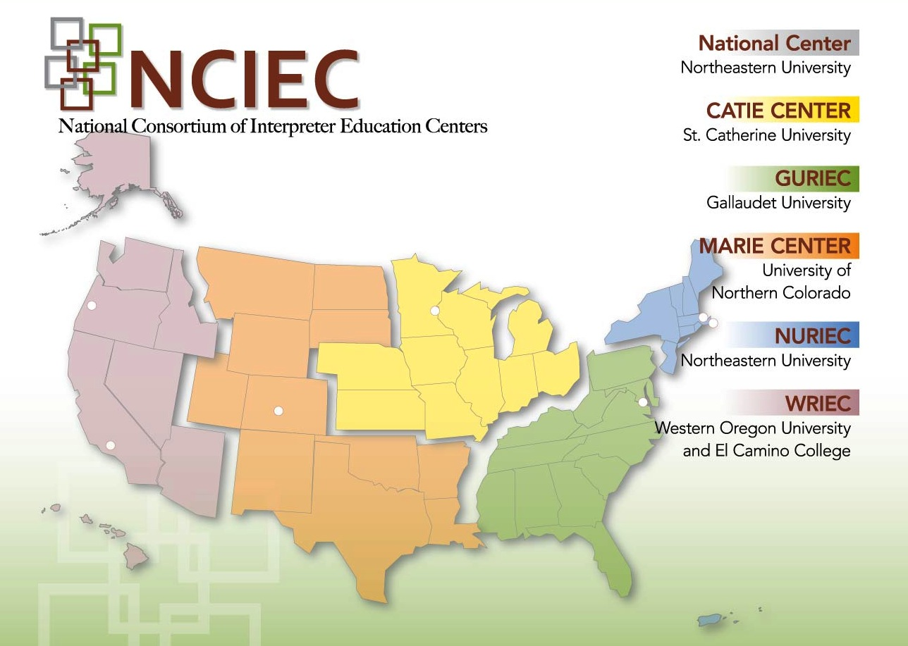

Find a Trainer
Since 2010, more than 250 deaf and hard of hearing advocacy specialists have been trained as DSAT Consumer Trainers. This group of individuals possesses the knowledge of and passion for advocacy, their desire to provide advocacy training, and
for their access to the Deaf Community and consumers of vocational rehabilitation. Fourteen members of this group are referred to as DSAT Master Trainers. In addition to providing consumer trainings, they are qualified to conduct train-the-trainer
trainings to deaf, hard of hearing and deaf-blind individuals interested in becoming a DSAT Consumer Trainer.
Trainer Attributes and Qualifications
Based on the effective practices findings of Communication Service for the Deaf (CSD), the DSAT curriculum is designed as a peer-led training. In addition to this strong preference for Deaf, hard of hearing and Deaf-blind trainers, trainers
must also have: • Native level fluency in ASL • A strong knowledge of and ongoing exposure to the Deaf community • A working knowledge of the target audience’s needs • In-depth knowledge of local, state and national resources • Ability to translate written
contents into communication modes and/or language choices appropriate for participants.
Directory of DSAT Consumer and Master Trainers
{kind=link}
DSAT Master Trainers with NCIEC DSAT Workteam Members
a six to eight hour blocks of time or longer. While the Directory groups the trainers according to the NCIEC region in which they reside, they may be available to travel outside the region. Please contact them directly to learn of their availability and
service fees (if any). Also, please note that those without contact information are not available for training.
NCIEC Regional Center Map |
Directory of DSAT Master Trainers
| CATIE Center Region: Upper Mid-West | |||
|---|---|---|---|
| Name | City/State | Contact Information | Availability |
| Kim Anderson | Lansing, KS | kimanderson.ks@gmail.com | Anytime |
| Angela Botz | Alton, IL | botz@impactcil.org 618-208-1146 VP | Anytime 9AM-4PM |
| Colleen Burdiss | St Louis, MO | cburdiss@paraquad.org | Daily 8AM-4PM, weekends upon request |
| Lee Clark ▲ | St Paul, MN | lee.clark@state.mn.us | Anytime |
| Sheri Cook | Murphysboro, IL | shericook@jalc.edu | Anytime |
| Sheryl D. Emery ● | Southfield, MI | Sherylem1@aol.com | Please contact for availability |
| Amanda Dudgeon | Peoria Heights, IL | adudgeon@advocatesforaccess.com VP: 309-863-5847 | Anytime, evenings and weekends (Flexible schedule that fits the best) |
| Matt Gwynn | Olathe, KS | Matt.j.gwynn@gmail.com | Friday evenings and weekends |
| Tamara Hogue | Jacksonville, IL | tamara.hogue@illinois.gov 217-717-9658 VP | Weekends |
| Hersel Jackson | Rock Island, IL | 309 948 6050 VP | Anytime |
| JJ Jones | Kansas City, MO | Laura.Thomas@hknc.org | 9AM–4PM |
| Kimberly Kuhns | Olathe, KS | KimberlyDeafTerp@gmail.com | Anytime |
| Kathy Manlapas | MN | kathy.manlapas@gmail.com | Evenings and weekends |
| Mindy Joy Mayer | Chicago, IL | Mindy.J.Mayer@gmail.com | Anytime |
| Michelle Mendiola | Chicago, IL | melalem19@yahoo.com | Anytime |
| Anil Phadke | Schaumburg, IL | anilsphadke@gmail.com | Anytime |
| Paul Pyers | Jacksonville, IL | paul@jacil.org | |
| Charleen Scully ● | Indianapolis, IN | Charleen.Sculley@aspireindiana.org | Please contact for availability |
| Deloris Summers | IL | queende1965@gmail.com | Anytime |
| Laura J. Thomas ● | E. Moline, IL | Laura.Thomas@hknc.org | Available most times. Please contact for availability. |
| Joseph Vieira | Jacksonville, IL | joseph.vieira@gmail.com | Evening and weekends |
| Bryen M Yunashko ●▲ | Chicago, IL | hello@bryen.com | Anytime |
| GURIEC Region: Atlantic Seaboard and Southeast U.S. | |||
|---|---|---|---|
| Name | City/State | Contact Information | Availability |
| Jimmy Autrey ● | Morganton, NC | jimmy.autrey@dhhs.nc.gov | Please contact for availability |
| Lisette Belanger | Wheaton, MD | lbelanger@dors.state.md.us | Please contact for availability |
| Ivy Bennett | Appomattox, VA | split2kaa@me.com | Please contact for availability |
| Ashley Benton ▲ | Raleigh, NC | ashleybenton@aol.com | Please contact for availability |
| Daniel Bolton | Ringgold, GA | d.lee.bolton@gmail.com | Please contact for availability |
| Tracy Bumgarner | Atlanta, GA | Tracy.Bumgarner@ablegeorgia.ga.gov | Please contact for availability |
| Julie Burton ● | Cedartown, GA | jburton@gachi.org | Please contact for availability |
| Rita Campbell | Marion Station, MD | ritacampbellasl@yahoo.com | Please contact for availability |
| Trina Cartwright | Salisbury, MD | trina.cartwright@maryland.gov | Please contact for availability |
| Rickey Clemons | Gurley, AL | rclem43@gmail.com | Please contact for availability |
| Alissa Conover | Rochelle, VA | alissa@civicaccess.com | Please contact for availability |
| Mary Crews Nunnally | Henrico, VA | mary.nunnally@dars.virginia.gov VP: 804-433-3277, Phone: 804-322-3456 | Please contact for availability |
| Torii Deaner | Verena, VA | torii.deaner@gmail.com | Please contact for availability |
| Michael Deuel | Huntsville, AL | deuel.michael@aidb.state.al.us | Please contact for availability |
| Anita Dowd | Frankfort, KY | Anita.Dowd@kcdhh.ky.gov | Please contact for availability |
| Becky Ferrel | Ringgold, GA | jdblferrell@gmail.com | Please contact for availability |
| Brian Fleming | Augusta, GA | Brian.Fleming@ablegeorgia.ga.gov | Please contact for availability |
| Kristi Fohrenck ▲ | Missouri | fohrenckg001@gmail.com | Please contact for availability |
| Kelsey Gilstrap | Virginia Beach, VA | kelstrap@gmail.com | Please contact for availability |
| MaryRose Gonzalez | Fredericksburg, VA | belladeafmentor@gmail.com | Please contact for availability |
| Star Grieser | Nolfolk, VA | stargrieser@gmail.com | Please contact for availability |
| Beverly Hanyzewski | Troy, AL | bhanyzewski@troy.edu | Please contact for availability |
| Vicki Hardy | Pell City, AL | hardy.vicki@aidb.state.al.us | Please contact for availability |
| Laura Herman | Morganton, NC | Laura.Herman@dhhs.nc.gov | Please contact for availability |
| Wendy Hill | Lanham, MD | whill@dors.state.md.us | Please contact for availability |
| Harriett Hollingsworth | Huntsville, AL | hahahollingsworth@gmail.com | Please contact for availability |
| Michelle Hoskinson | Stuarts Draft, VA | pacedeafadvocacyservice@gmail.com | Please contact for availability |
| Kelly Stockdale Hyder | Adairsville, GA | kelhyder@yahoo.com | Please contact for availability |
| Mona Ivy | Philadelphia, PA | mivey003@gmail.com | Please contact for availability |
| Ikumi Kawamata | Washington, DC | ikumi25@gmail.com | Please contact for availability |
| Chuck Kelly | Portsmouth, VA | chuck.kelley@dars.virginia.gov | Please contact for availability |
| Tammie Kelly | Sylacauga, AL | tammiekelley85@gmail.com | Please contact for availability |
| Vyron Kinson | Atlanta, GA | vkinson@yahoo.com | Please contact for availability |
| Susan Lambert | Odenville, AL | Magals19@gmail.com | Please contact for availability |
| Kristin Lazor | Bloomsburg, PA | kmlizor518@aol.com | Please contact for availability |
| Wendy, Lozynsky | Birmingham, AL | SunnyWL@me.com | Please contact for availability |
| Victoria Ann Magliocchino ▲ | Jacksonville, FL | VickyMaglio@yahoo.com | Please contact for availability |
| Kimberly Majus | Salisbury, MD | kmajus@discoverhci.org | Please contact for availability |
| Fred Miller | Chelsea, AL | Fred.miller12@gmail.com | Please contact for availability |
| Anita Moore | Elmore, AL | juanitagal35a@gmail.com | Please contact for availability |
| Matt O’Varanese | Charlottesville, VA | flavorsofearth@gmail.com | Please contact for availability |
| Beth Overland | Northport, AL | beth.overland@gmail.com | Please contact for availability |
| Craig “Hank” Passi | Baltimore, MD | Hpassi@dors.state.md.us | Please contact for availability |
| Jared Patton | Columbus, GA | Jared.Patton@ablegeorgia.ga.gov | Please contact for availability |
| Nancy Ravindra | Decatur, AL | nanravindra@me.com | Please contact for availability |
| Shannon Reese | Montgomery, AL | shannon.reese@mh.alabama.gov | Please contact for availability |
| Becky Ripley | Talladega, AL | wripley125@charter.net | Please contact for availability |
| Daisy Rivenbark | Wilmington, NC | daisy.rivenbark@dhhs.nc.gov | Please contact for availability |
| Howard A. Rosenblum | MD | ||
| Kathy Schwabeland | Baltimore, MD | kathy.schwabeland@pepnet.org | Please contact for availability |
| Stephanie Scott | Wilson, NC | stephanie.scott@dhhs.nc.gov | Please contact for availability |
| Randy Shaw | Duluth, GA | randyshawcdi@msn.com | Please contact for availability |
| Niesha Shepard | Washington, DC | nwshepard@gmail.com | Please contact for availability |
| Melody Stoner | Atlanta, GA | abcdeducator@hotmail.com | Please contact for availability |
| Dana Tarter ▲ | Rome, GA | danatarter@me.com | Please contact for availability |
| Kimberly Thornsberry ● | Huntsville, AL | kmtberry4@gmail.com | Please contact for availability |
| Rockey Truman | Talladega, AL | rocky.truman@rehab.alabama.gov | Please contact for availability |
| Renee Walker ▲ | Macon, GA | rlwalker@wynfieldca.org | Please contact for availability |
| Marcus Washington | Montgomery, AL | washington.marcus@aidb.state.al.us | Please contact for availability |
| Michelle Williams | Prattville, AL | hazelgemi70@gmail.com | Please contact for availability |
| Jenny Witteborg | Rixeyville, VA | wittypro7@gmail.com | Please contact for availability |
| Tracey Wyant | Germantown, MD | twyant@dors.state.md.us | Please contact for availability |
| MARIE Center Region: Mid-West | |||
|---|---|---|---|
| Name | City/State | Contact Information | Availability |
| Alma Rosa Pizarro-Gould ● | Round Rock, TX | bebeeangels@aol.com 361-288-8787 VP | Most days, evenings and weekends |
| Laurie Bishop | Highland, UT | lauriebishop@utah.gov 801-657-5209 | Anytime |
| Corina Gutierrez ● | Albuquerque, NM | Corina.Gutierrez@state.nm.us | Please contact for availability |
| Ricky Harris | Abilene, TX | ricky.harris@disabilityinaction.org VP: 325-400-5782 | Weekdays |
| Ann Horn ● & Randi Turner ● | Austin, TX |
annhhorn@gmail.com VP 512 377 1573 home VP 512 410 1387 work
randiturner.texas@gmail.com 512.410.7691 VP 512.567.2634 (V-cell) can text or call |
Taught as a deaf/hearing team. Possible weekdays, prefer evenings and weekends. |
| Lynette Linker | Madisonville, LA | LLalink78@gmail.com 985.200.2173 | Some evenings and Saturdays |
| Rob Loveless | Bloomington, IN | rloveles@indiana.edu | Varies, subjected to change |
| Pamela Mower | Taylorsville, UT | pmower@utah.gov | Anytime |
| Ron Nelson | Salt Lake City, UT | ronnelson@utah.gov 801-657-5222 VP | Anytime, Evenings |
| Mistie Owens | Midvale, UT | maowensCDI@gmail.com 801-584-9846, text only | Please contact for availability in Utah and Idaho |
| Lynn Null | Tulsa, OK/td> | Mlznull@aol.com | Evening and weekends |
| Karen Park ▲ | CO | sunflowerkp@aol.com | Anytime |
| Stephen Persinger | Salt Lake City, UT | spersinger@utah.gov | Please contact for availability |
| Lisa Potter | Baton Rouge, LA | lisachase24@gmail.com 225.341.6431 VP | Please contact for availability |
| Michelle Rolewitz | Fargo, ND | rolewitz@hotmail.com 701.205.3041 VP | Please contact for availability |
| NURIEC Region: Northeast and Caribbean Island Territories | |||
|---|---|---|---|
| Name | City/State | Contact Information | Availability |
| Michelle Ames | Portland Maine | amesm1@comcc.org | Conducted through Community Counseling Center. Contact Kristine Dach at dachk@comncc.org. |
| Rachel Boll | Denver, CO | RachelBoll@icloud.com | Please contact for availability |
| Michelle Cline | Bloomingdale/Trenton, NJ | cmcmichellecline@gmail.com | Evenings/weekends |
| Keri Darling ● | VT | kdarling@dvas.org | Please contact for availability |
| Elaine Ducharme ▲ | Boston, MA | educharme@deafinconline.org | Please contact for availability |
| Tammy Ennis ● | Bridgeport, CT | tammy.ennis@gmail.com | Please contact for availability |
| Dan Foley | Worcester, MA | DPFoley1@gmail.com | After 3pm weekdays and anytime on weekends |
| Bonnie Kaplan | Boston, MA, | b.kaplan@neu.edu | Anytime |
| Tim Riker | Somerville, MA | timrikercdi@gmail.com | Please contact for availability |
| Vicki J. Sullivan, MA, RDT, CDI | Lawrenceville, NJ | vjsullivan7@gmail.com | Concentration in employment and job retention |
| Ivy Velez | Marlborough, MA | IMVelez@sprint.blackberry.net 866.927.7805 – VP | Please contact for availability |
| Stephen Weiner | Boston, MA | sweiner@bostonpublicschools.org | Anytime |
| John Wilcox | Boston, MA | jwilcox@bostonpublicschools.org | Weekday evenings |
| Christopher Woodfill ▲ | New York, New York | Chris.Woodfill@hknc.org | Please contact for availability |
| WRIEC Region: Western U.S. and Pac Rim Islands | |||
|---|---|---|---|
| Name | City/State | Contact Information | Availability |
| Elizabeth Andrews | Anchorage, AK | ||
| Brenda Aron | Seattle, WA | Baron@sccd.ctc.edu Baron1981@comcast.net |
Evenings and weekends |
| Beca Bailey | Phoenix, AZ | b.bailey@acdhh.az.gov | |
| Linda Bove | Phoenix, AZ | Lined247@gmail.com | |
| Charles Chee-Weng-Chang | Twin Falls, ID | charleschang2005@gmail.com | Evenings and weekends |
| James Christianson, Jr. | Bellingham, WA | jchristianson@hsdc.org | Evenings and weekends |
| Larry Devenny | Phoenix, AZ | Laliwho@gmail.org | |
| Sean Furman | Phoenix, AZ | s.fuman@acdhh.az.gov | |
| Jennifer Gajardo | Phoenix, AZ | jGajardo@azdes.gov | |
| Andy Granda ▲ | CA | serviceomatic@gmail.com | Please contact for availability |
| Emmet Hassen | Phoenix, AZ | E.Hassen@acdhh.az.gov | |
| Rae Hensan | Kingman, AZ | Raerae5coo@gmail.com | |
| Damon Johnson | Blaine, MN | mrjasl@gmail.com | Evenings and weekends |
| Rev Nick Leflors | Everett, WA | nickl@bca-online.com 425.698.2223 | Anytime |
| Joy Maisel | Riverside, CA | joyfultea3@gmail.com 909.398.0150 | Evenings and weekends |
| Jerrel Mathern | Seattle, WA | Jmathern@hsdc.org | Please contact for availability |
| Colleen Matusof | Honolulu, HI | colleenkmatusof@gmail.com | Please contact for availability |
| Kim Minard | Phoenix, AZ | kimm@vcdaz.org | |
| Cynthia Napier | Riverside, CA | Cyndergirl59@msn.com | |
| Thomas J. Posedley | Phoenix, AZ | tjposedley@gmail.com | |
| Timothy Sanger | Phoenix, AZ | tjsanger@gmail.com | |
| Megan Scarboro | Phoenix, AZ | Megan.scarboro@asdb.az.gov | |
| Beth Smiley | Surprise, AZ | BSmiley0717@gmail.com | |
| Hal Suddreth | Canyon Country, CA | halsuddreth@gmail.com 661.513.4988 VP | Please contact for availability |
| Angela Theriault ▲ | Portland, OR | atheriault@seattledbsc.org | Please contact for availability |
| Dale Tolstead | Anaheim, CA | Tolesteadd@aol.com | Fridays and Saturdays, others upon request |